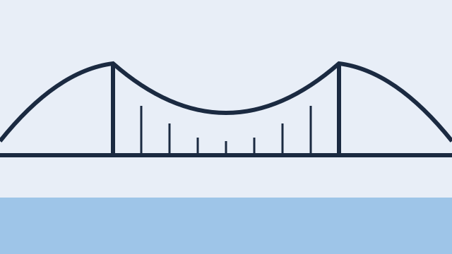
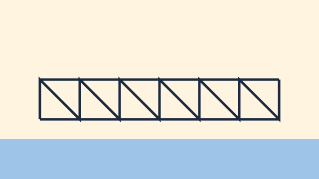

Structural engineering for curious builders
How Bridges Carry Loads
Every bridge solves one problem: moving weight sideways to solid ground. Explore the ideas, study the forces, challenge the myths and build a bridge of your own.

Understand
Forces every bridge must handle
Compression pushes, tension pulls, and every part of a bridge is doing one of the two.
A bridge carries two kinds of load. The dead load is the bridge's own weight, which never goes away. The live load is everything that crosses it: people, vehicles, wind and snow.
Read more
Inside the structure, those loads become internal forces. Compression squeezes material together, like a stack of books being pressed down. Tension stretches material apart, like a rope in a tug of war.
Different materials are good at different jobs. Stone and concrete are strong in compression but weak in tension. Steel cables are excellent in tension but buckle when pushed. Good designs give each material the force it handles best.
Engineers also worry about shear, where one part of the structure slides past another, and torsion, a twisting force that wind can introduce on long spans.
Key points
- Dead load is constant; live load changes.
- Compression squeezes, tension stretches.
- Match each material to the force it resists best.
Understand
Bridges in numbers
- Oldest stone arch bridges still in use
- ~1,000 yearsWell-built arches improve under load.
- Classic structural families
- 3Beam, arch and suspension.
- Typical safety factor target
- 2:1Designs carry at least twice their expected load.
Engineer
How the main designs work
Each family routes force differently.
Beam
A horizontal span supported at both ends. Simple to build, but long beams sag unless they are deep or supported.
Arch
The curve turns downward load into compression that flows into the abutments at each end.
Truss
Triangles make a rigid frame. Each member is mostly in pure tension or pure compression.
Suspension
Deck loads hang from cables. The cables carry tension over towers into anchors on the shore.
Explore
Structures to explore
Compare shapes and notice where the material is working hardest.
Arch: compression along the curve. 
Truss: a frame of triangles. Beam: bending under load. Suspension: cables in tension.
Understand
A short history of spanning gaps
Prehistory
Fallen logs and stone slabs
The first beam bridges were found objects.
~200 BCE
Roman arches
Repeated semicircular arches carried roads and aqueducts across valleys.
1779
Cast-iron bridge
Iron arrived as a structural material for spans.
1930s
Long-span suspension
Steel cables made spans of more than a kilometre possible.
Challenge
Challenge: is the arch always strongest?
Two common claims, tested against the physics.
Claim: arches never fail
- Arches need solid abutments to resist sideways thrust.
- A weak foundation lets the arch spread and collapse.
Claim: thicker is always safer
- Extra material adds dead load.
- A heavier bridge may need bigger foundations.
Challenge
Questions to argue about
Why do suspension bridges sway?
Their light, flexible decks respond to wind. Designers add stiffening trusses and aerodynamic shapes to control movement.
Can a bridge be too strong?
Over-building costs money and materials, and stiff structures can crack where flexible ones would absorb movement.
Build
Build a craft-stick truss bridge
Test the triangle for yourself.
Build a small truss and test how much weight it carries before it bends. Record your results and try a second design.
You will need
- 30 craft sticks
- White glue
- Two stacks of books as supports
- A small bucket and coins as load
Instructions
- Glue two sticks into a long beam and let them dry.
- Add diagonal sticks to form triangles along both sides.
- Rest the span across the books with 20 cm between supports.
- Hang the bucket in the middle and add coins one at a time.
- Record the load at which the bridge bends.
Anyone can build a bridge that stands. An engineer builds one that stands just enough.
Sources
- Structural Engineering Basics (open course notes) — Example Open University Chapters 2–4
- A Brief History of Bridge Design — Example Museum of Engineering
- Load Testing Small Structures — Example Maker Guide